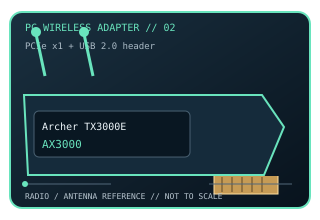

[ MODEL-SPECIFIC PC WI-FI HARDWARE ]
TP-Link Archer TX3000E AX3000 Wi-Fi 6 PCIe Adapter
Dual-band 2×2 Wi-Fi 6 desktop PCIe adapter with 160 MHz 5 GHz support and Bluetooth 5.0. This record documents the named model and its labeled revision scope; it is not a claim that similarly named variants share identical drivers or radio limits.

IDENTIFICATION: Match the full product name, model label and hardware revision with its manufacturer page before choosing a driver. Regional channel and OS support can vary.
Dedicated wireless specifications
| Cataloged product | TP-Link Archer TX3000E AX3000 Wi-Fi 6 PCIe Adapter |
|---|---|
| Wi-Fi generation / standards | Wi-Fi 6 (IEEE 802.11ax), with 802.11a/b/g/n/ac compatibility. |
| Radio bands, channels & width | 2.4 GHz and 5 GHz. Channel widths include 20/40 MHz at 2.4 GHz and up to 160 MHz at 5 GHz; typical U.S. channels are 1–11 and 36–165 respectively, subject to region, DFS, access point and driver. |
| Spatial streams / nominal link rates | 2×2 MIMO; up to 574 Mb/s at 2.4 GHz and 2,402 Mb/s at 5 GHz with a compatible 160 MHz Wi-Fi 6 access point (nominal AX3000 aggregate label). |
| Host interface | PCIe x1 host interface; Bluetooth 5.0 function uses a separate motherboard USB 2.0 header cable. |
| Antenna arrangement | Two detachable high-performance antennas on the included magnetic antenna base with extension lead. |
| Operating-system compatibility | Windows 10 64-bit is the manufacturer-listed OS for this hardware family; check the TP-Link download page against the revision label before installation. |
| Bluetooth | Bluetooth 5.0 requires the supplied cable from the card to an available internal USB header. |
| Regulatory channel note | Dual-band only (2.4/5 GHz). DFS channels may be unavailable or restricted by the access point, region, firmware or driver. |
Model-specific installation notes
The advertised 2,402 Mb/s 5 GHz mode depends on 160 MHz support at both ends and a clean channel; the PHY label is not application throughput.
2 external antennas are shown in this model’s source documentation. Install only with the correct host connector and driver package; antenna placement, local regulation and access-point capabilities affect operation.
Manufacturer sources
- Archer TX3000E official product specificationsOfficial manufacturer source for product specifications, revision-specific software, or compatibility requirements.
- Archer TX3000E manufacturer downloads and revision supportOfficial manufacturer source for product specifications, revision-specific software, or compatibility requirements.
Source pages may describe a hardware family or provide revision-selected downloads. Manufacturer regional restrictions and current OS support take precedence over generic interface fit.